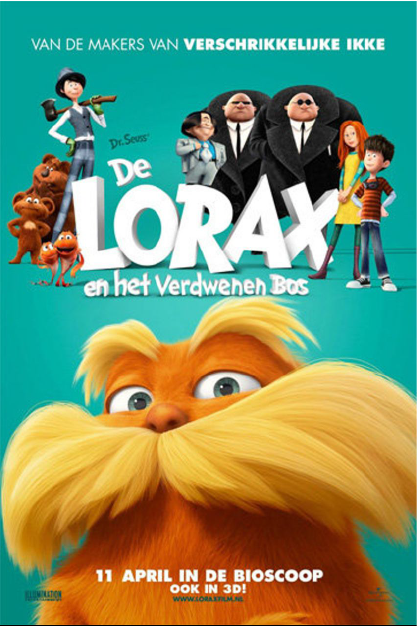

|  |
|---|
Dr. Seuss' The Lorax เนื้อเรื่องย่อ : หน้าที่ของโลแรกซ์ในฐานะผู้พิทักษ์ป่าถูกท้าทายเมื่อวันซ์-เลอร์ เด็กหนุ่มผู้ทะเยอทะยาน โค่นต้นทรัฟฟูลาลงและขู่ที่จะตัดต้นไม้เพิ่มเพื่อขยายแผนธุรกิจของตัวเอง ด้วยความโกรธแค้นจากการกระทำทารุณต่อธรรมชาตินี้ โลแรกซ์วิพากษ์วิจารณ์การกระทำของวันซ์-เลอร์อย่างรุนแรง ตั้งแต่ครั้งแรกที่ได้พบกัน ทั้งคู่ก็เข้ากันไม่ได้เสียแล้ว ต่างฝ่ายต่างก็มุ่งมั่นที่จะกำจัดกันและกัน แต่เมื่อเวลาผ่านไป พวกเขาก็เริ่มชื่นชมอีกฝ่าย หากแต่ท้ายที่สุด โลแรกซ์ก็ไม่สามารถต้านทานความโลภและความทะเยอทะยานที่เริ่มครอบงำวันซ์-เลอร์ ผู้ไม่ยอมให้อะไรมาหยุดยั้งแผนการที่จะสร้างอาณาจักรธุรกิจของตัวเอง แม้ว่ามันจะหมายถึงการโค่นต้นไม้ทุกต้นและทำลายหุบเขาแห่งนี้ก็ตามที หลังจากต้นไม้ทั้งป่าถูกโค้นไปแล้วจะเป็นอย่างไรตามดูได้เลยค่ะ
สามารถดูเต็มๆได้ที่ Netflix คลิกที่ลิ้งก์
|
|---|
 |
|---|